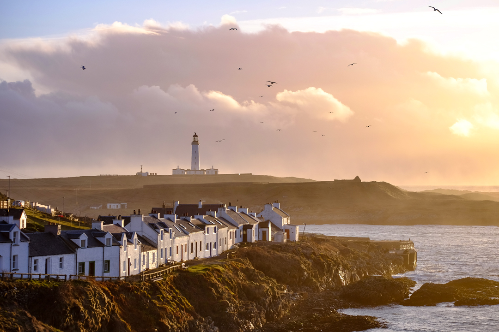
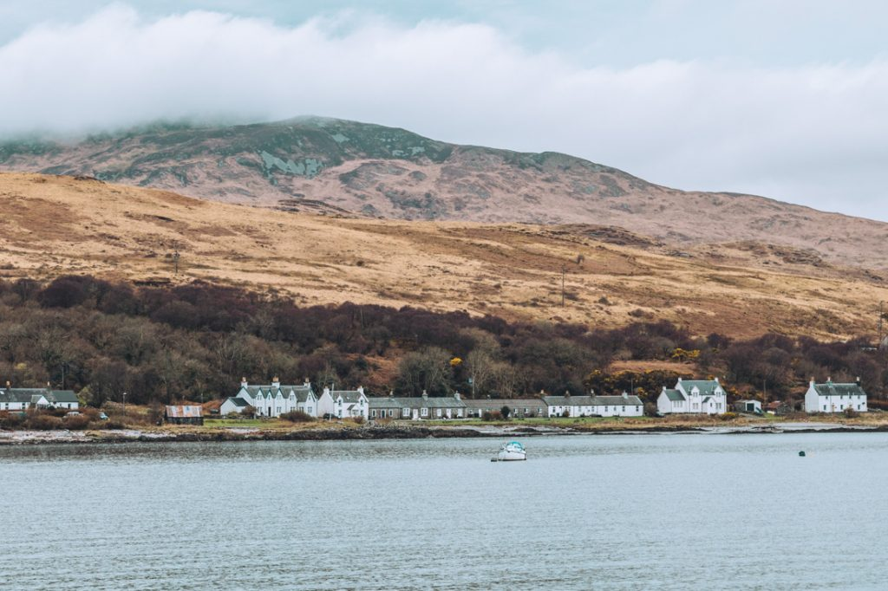
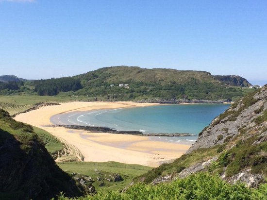
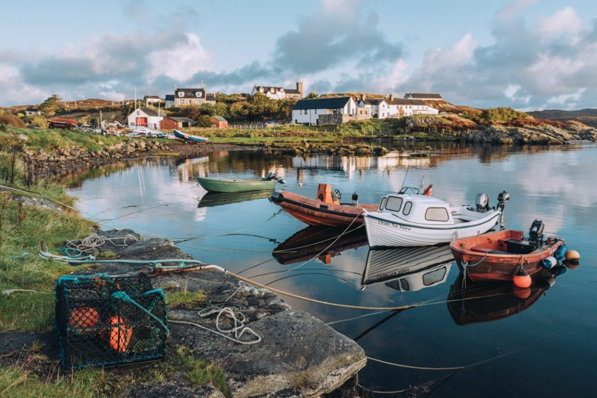
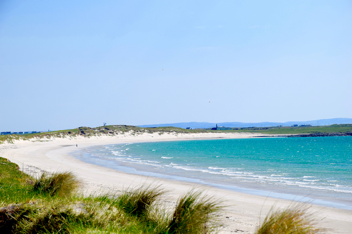
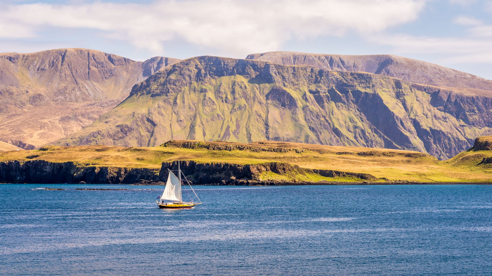
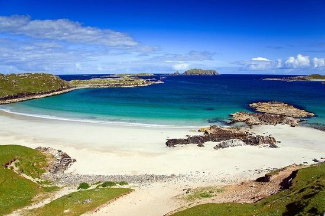
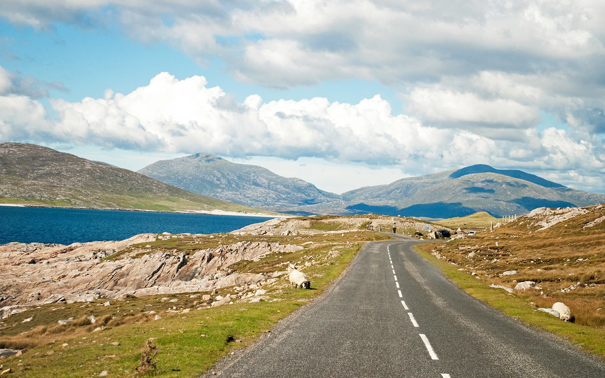
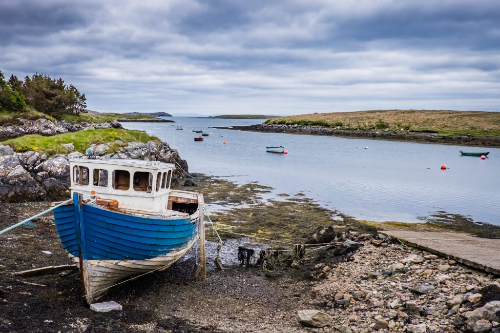

by Sophie Hollis
The Isle of Arran is often described as Scotland in miniature. Home to around 4,000 people, Arran has an overwhelming amount of activities, scenery and wildlife to experience, all within a two-hour journey from Glasgow.
The Isle of Bute has long been established as a day trip destination for Glasgow folk travelling on steamers along the Clyde. Rothesay has a Victorian elegance to it, which makes for a nostalgic trip back in time.
At roughly four kilometres long by two kilometres wide and boasting tranquil roads, Cumbrae is an idyllic place to do watersports, walking and cycling. The ferry from Largs to Great Cumbrae takes just over 8 minutes.
Islay is fondly known as the 'Queen of the Hebrides' and is widely regarded as the spiritual home of whiskey. Islay boasts white-sand beaches, unique birdlife and a rugged coastline.
The Isle of Jura lies very close to Islay, with a population of 200 that is vastly outnumbered by 6,000 red deer. Jura is rugged and dominated by three great cones, known as the Paps.
Colonsay is small enough to be explored by bike and on foot, yet large enough to keep you busy for at least a week. The island has spectacular beaches, rugged miniature hills and a vibrant community.
The Isle of Mull is the second largest of the Inner Hebrides after Skye. There is a long and hearty list of all the things you can do, including climbing Ben More, the only island Munro, standing at 966 metres above sea level.
Iona holds a special place in the hearts of many Scots, known as the cradle of Christianity in Scotland, where the original monastery was founded in the sixth century by St Columba, a monk who had been exiled from Ireland.
Ulva is Scotland's newest community-owned island, purchased in 2018 by the North West Mull Community Woodland Company. The island is reached by a short ferry ride from Mull. Ulva is peaceful and quiet.
Coll is a neighbor of Tiree, both similar in size, but Coll is far more wild and rugged in its character. The island is surrounded by stunning white-shell sands. Coll was the first island to be awarded Dark Sky status, observing the bright stars on any given night is a truly spectacular experience.
Tiree is the most westerly of the Inner Hebrides and renowned for its long hours of sunshine in the spring and early summer. There is a healthy population of 650 people, many of whom live in white-washed cottages with tall, hipped roofs. Tiree has become the centre of windsurfing, due to its flat landscape.
Rum is the largest of the Small Isles and magnificently wild and rugged, dominated by the jagged mountains of the dark volcanic rock peaks of the Cuillin ridge. For a period it was known as 'the Forbidden Isle' as visitors were discouraged, but now it is owned by the local community.
The best known of all the Scottish islands, Skye is a mystical place with dramatic landscapes. The Skye bridge has connected the island to the mainland since 1995 and there is a huge range of activities to do.
Raasay is the largest of the islands off the coastline of Skye, and it is a real gem. Almost twenty kilometres long, its landscape is dominated by the flat-topped volcanic summit of Dun Caan, reaching 444 metres.
Scalpay is an island of bleak and rugged character which can be seen from Skye. Today, Scalpay home to one single family, with three holiday cottages to rent. Aside from those in booked cottages, there are no regular boat trips.
The best known of all the Scottish islands, Skye is a mystical place with dramatic landscapes. The Skye bridge has connected the island to the mainland since 1995 and there is a huge range of activities to do.
Raasay is the largest of the islands off the coastline of Skye, and it is a real gem. Almost twenty kilometres long, its landscape is dominated by the flat-topped volcanic summit of Dun Caan, reaching 444 metres.
Scalpay is an island of bleak and rugged character which can be seen from Skye. Today, Scalpay home to one single family, with three holiday cottages to rent. Aside from those in booked cottages, there are no regular boat trips.
